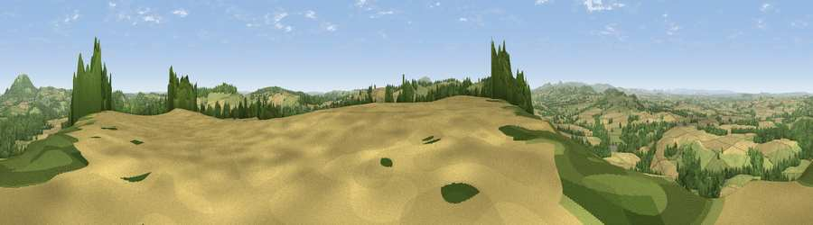

Viewpoint near Homer
#2830 in England · top 7% of its area beats it · near HomerWhere it is
The exact computed spot (SJ 61525 00875). Click the marker for map links.
The view, rendered

A 360° render of this exact spot computed from the terrain model, tree cover and land cover — summer colours, afternoon light, calibrated against photographs of famous viewpoints. Real trees, hedges and buildings will differ in detail.
The panorama
Grey silhouette: terrain skyline in each direction (720 bearings, Earth curvature and refraction included). Dashed green: skyline with trees (+15 m) and buildings (+8 m) as obstacles. Blue strip: how far the ground is visible on each bearing.
Where the view opens
Wedge length = distance to the farthest visible ground on that bearing (vegetation-aware). Rings at 10, 25 and 50 km.
What fills the view
50% cropland · 31% grassland · 19% woodland ·
Angular shares of the visible panorama (visual magnitude), not map area. Landscape diversity 0.46 (0–1 Shannon).
Key numbers
More beautiful places nearby
The staircase of upgrades: each row has a higher view potential than everything closer. Driving times are estimates from straight-line distance, calibrated against real road routing — check an actual route before setting out.
| Place | Direction | Drive | Score |
|---|---|---|---|
| Viewpoint near Harley | SW · 2 km | ~5 min | 79.9 |
| Viewpoint near Little Wenlock | N · 7 km | ~15 min | 86.6 |
| North Hill | SSE · 57 km | ~79 min | 86.8 |
| Worcestershire Beacon | SSE · 58 km | ~80 min | 87.1 |
| Viewpoint near West Quantoxhead | SSW · 166 km | ~188 min | 87.9 |
| Viewpoint near West Quantoxhead | SSW · 167 km | ~188 min | 88.7 |
| Holdstone Hill | SSW · 182 km | ~203 min | 90.2 |
| The Knoll | S · 213 km | ~230 min | 91.0 |
52.60429, -2.56955 · source: screening · position refined by local search. Computed location — check access rights before visiting.